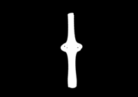
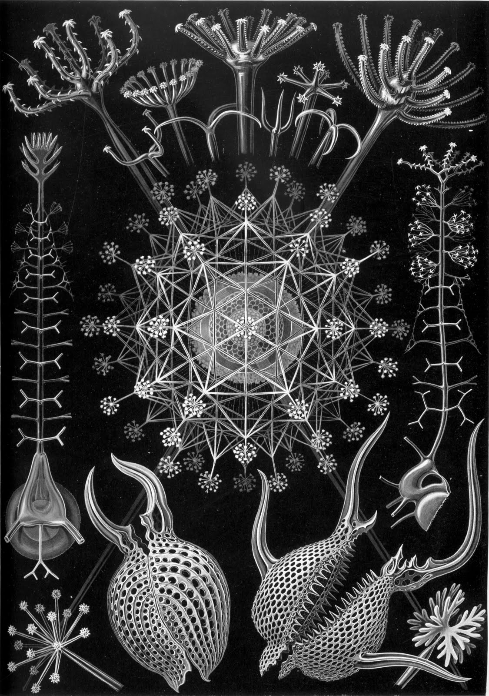

We Go Together is my Master's thesis for NYU's Interactive Telecommunications Program (ITP). I produced it with a library I wrote for three.js called TREE.js and built a simple gui for it using DAT.gui and the Ace Editor

TREE.js is based on rigging concepts in 3D animation. Bones are parented to other bones and animated with functions. Remarkably complex and natural forms can be easily constructed. The work of Ernst Haeckel inspired the initial development of the library.

The following animation was created with relatively little code. tree.generate() creates branches based on which numbers are in different indeces of an array. In the example below tree.generate() is saying that the first branch has 100 joints and the second set of branches has 10. The second set of branches begins to branch at the 70th joint of the first branch, and the tree will branch 3 times at first and then only once for the second layer.
Once the tree is generated and added to a scene I can select individual joints or rows of joints with tree.makeList(). -1 means all the joints, -2 means all but the first joint. By naming groups of joints first, accessing them for animation later becomes much faster. tree.applyFunc() accepts an array of objects and uses that to animate the joints. Any function can be passed but I built a generic translation function called tree.transform. tree.transform uses joint.joint, a number which determines the position of each joint in a chain to drive the animation. So for instance - joint.rotation = sin(joint.joint) will animate the joint in a wave.
tree = new TREE();
tree.generate({
joints:[100,10],
angles:[pi,.2],
rads:[3,1],
start:[70],
length:[1,2]
})
scene.add(tree);
radialBranch = tree.makeList([0,-1,-2]);
featherPieces = tree.makeList([0,-1,-1,-1,-2]);
tree.applyFunc([
radialBranch, {rx:data.var1*.1},
radialBranch, {rz:-.02,
jMult:.1,
jFract:.02,
jFreq:.1,
jOffset:data.var4,
jOff:count*data.var7*-.1},
featherPieces, {sc:1+(data.var3*.2),
rx:data.var2,
jOffset:data.var4,
jOff:count*data.var7*-.1,
jFreq:data.var5,
jMult:data.var6}
],tree.transform)
data.var* refers to DAT.gui slider values. It is easy to rebuild the gui to create custom sliders and then copy the values from the sliders back into the code.
For this video I started with the moth model and commented out all the code that applied transformations to the joints. I began by going through and making this code active again, demonstrating how transformations are applied to individual joints sometimes and other times to groups of joints. The video ends with the extrusion of geometry along the joints and then the conversion of this geometry into implicit surfaces for 3D printing.
The following video is going through the presets built into the TREE.js interface. The best place to start using TREE.js is through the simple IDE I built, when you're ready to do something more complex you should fork me at Github and work locally.
TREE.js is still very much a work in progress and it wouldn't have happened without Mr Doob and the rest of the team responsible for three.js. I am an old hat with 3D generally but a newbie with programming and three.js made for an easy and intuitive transition into coding 3D graphics. The learning curve for TREE.js is not trivial and I am not planning to document it extensively, hopefully the examples will serve as reasonably good documentation, if you're planning to give it a try and have questions feel free to get in touch: info@dlobser.com.
Thank You!